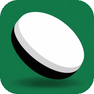

Reversiology
Black2
White2

ReversiologyBlack moves first. Players take turns placing one disc of their colour on an empty square.
Every move must flip. Place your disc so that one or more straight lines (across, down or diagonal) of your opponent's discs lie between it and another of your discs. All of them flip to your colour.
No move? Then you pass, and your opponent moves again. You can't pass while you have a legal move.
End: when neither player can move, usually because the board is full. The player with more discs wins.
Turn on Legal moves to see where you can play, and hover a square to see what it would flip.
New to the game? The easy 🧩 Puzzles teach the big ideas one position at a time.
A disc in a corner can never be flipped, and it makes the discs along its edges safe too. Corners are the most valuable squares.
The squares next to an empty corner are dangerous: the one diagonally inside it is the X-square, the two along the edges are C-squares. A disc there often lets your opponent into the corner. Turn on Danger squares to see them.
Flipping lots of discs early feels good, but it usually hurts: every disc next to an empty square (the frontier) gives your opponent something to flip.
Strong players aim for mobility: keeping many moves for themselves and few for the opponent. A player with few moves is soon forced into bad ones, like giving up a corner.
Good moves are often quiet: they flip a few discs in the middle of your group and create no new frontier.
Stable discs can never be flipped again: corners, and discs anchored to them along full edges. Turn on Stable discs to see them.
Parity: near the end the empty squares split into regions. Playing the last move in a region is an advantage, so try to move into regions with an odd number of empty squares.
In the last moves the coach plays the game out exactly and tells you who wins with perfect play.
←/→ step · Home/End start/latest · U take back · H hint · O their idea · Esc clear markers
M legal moves · V flip preview · D danger squares · T stable discs · F frontier · P regions · K opening book · G grades · B best moves · N numbers
Tab to the board, then ↑↓←→ move · Enter play · PgUp/PgDn step · S speech · R repeat